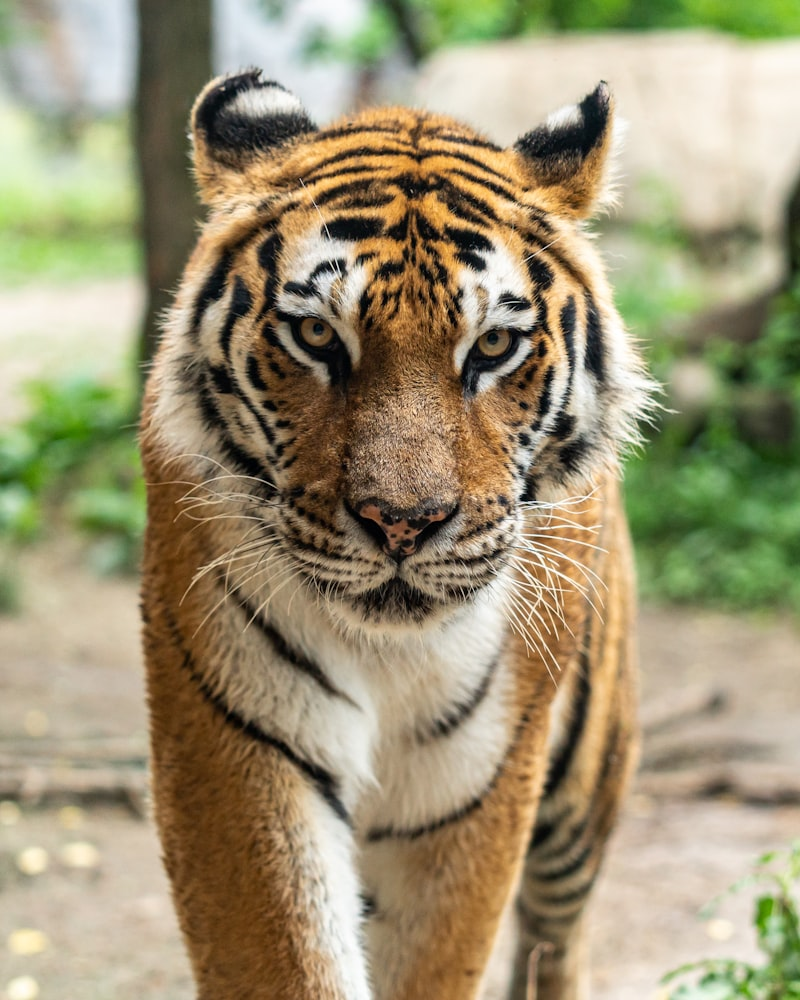

Find your kind of journey
What brings you to Sri Lanka?
Follow your interests, then leave room to discover something unexpected.

Cultural Triangle
Sigiriya
Ancient landscapes, at your own pace
2 nights suggested · Read guide →
Hill Country
Ella
Take the slow route through tea country
2–3 nights suggested · Read guide →
South Coast
Galle Fort
Coastal streets with centuries of stories
1–2 nights suggested · Read guide →
Central Province
Kandy
A cultural stop between lowlands and hills
2 nights suggested · Read guide →
Southeast
Yala National Park
Make space for wildlife, without rushing it
1–2 nights suggested · Read guide →